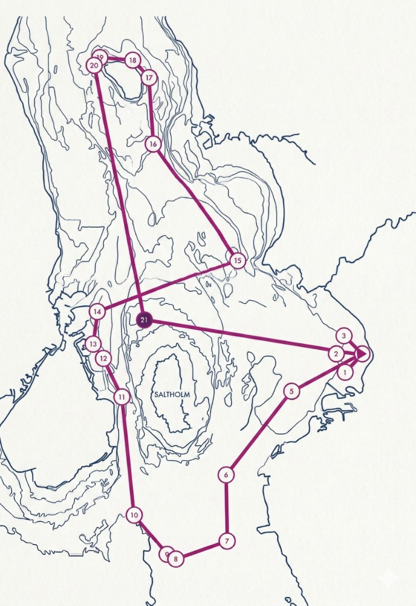

Twilight Challenge
Inget mätbrev. Inga krångliga regler. Bara du, din båt och havet.
Anmäl dig till tävlingenInbjudan till tävlingen
Lommabuktens Seglarklubb (LBS) bjuder in till Twilight Challenge – Lomma, en nattsegling i Öresund med start och mål i Lomma. Tävlingen ingår i Lomma Hamnfest 2026 – start och målgång sker i anslutning till folkfesten.
Du är välkommen med din båt. Fast bana, tydliga waypoints, inget handikappsystem. En möjlighet att mäta dig mot dig själv och andra under natten.
Lommabuktens Seglarklubb
Lördag 30 maj 2026
Första start 15:30, sista 16:30Söndag 31 maj kl. 17:00
Lomma hamn
ca 80 NM
ca 1 290 kr/båt
(2 personer, inkl. korv & dryck i mål + Finisher-T-shirt)Program kring tävlingen
Fredag 29 maj: Öppen båt – alla i hamnområdet välkomnas att komma och kika på en tävlingsbåt innan klockan 19:00. Därefter gemensam pizzabuffé för deltagare. Skepparmöte (pre-start briefing) vid Klubbhuset i Lomma hamn – tid meddelas på hemsidan.
Lördag 30 maj: Parad i ån genom Lomma före starten, med talare och publik som del av Lomma Hamnfest 2026. Start från piren, signalstation på plats. Målgång med servering – allt inom ramen för folkfesten. Prisutdelning söndag 31 maj kl. 18:00 i Lomma hamn.
Bana
Banan i Öresund är ca 80 NM med 21 waypoints. Start och mål i Lomma bukt; banan går via Malmö/Vellinge, över till danska sidan, runt Saltholm och norrut mot Glumslöv/Niva innan den leder tillbaka till Lomma. Fullständig banbeskrivning publiceras separat. Ladda ner banan i GPX-format för navigationssystem eller kartapp.
Styliserad banöversikt

Seglingsföreskrifter
Tävlingen genomförs enligt COLREGS (Kappseglingsreglerna Del 2 gäller ej). Säkerhetsutrustning enligt Appendix A i seglingsföreskrifterna krävs. Giltig kappseglingsförsäkring krävs. Alla måste bära flytväst. Ladda ner GPX-fil med banans waypoints.
Viktiga regler (urval)
- TSS: Håll dig utanför trafiksepareringssystem enligt COLREGS regel 10.
- Lanternor: Båtar måste visa godkända lanternor enligt COLREGS. Defekta lanternor → omedelbar utgång.
- Motor: Får ej användas vid kappsegling utom vid fara eller nöd.
- Inget handikappsystem (SRS/ORC) – lågt insteg för alla.
Anmäl dig
Vi ser fram emot att ha dig med. Anmäl ditt båtlag via formuläret nedan – du får bekräftelse och vidare instruktioner på e-post. Regler för avanmälan och återbetalning anges i inbjudan och på webbplatsen.